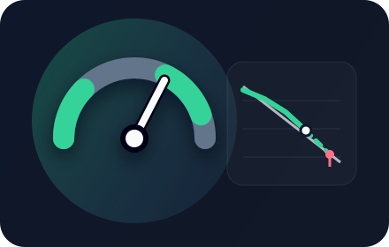
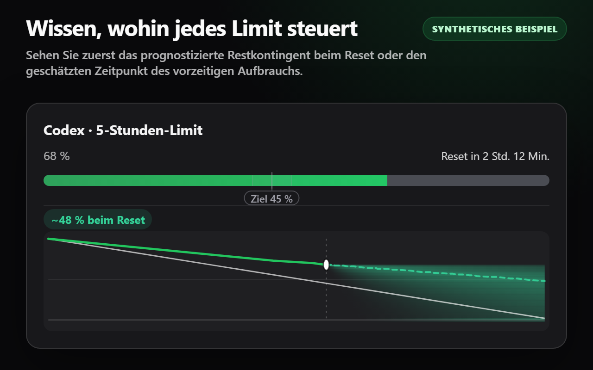
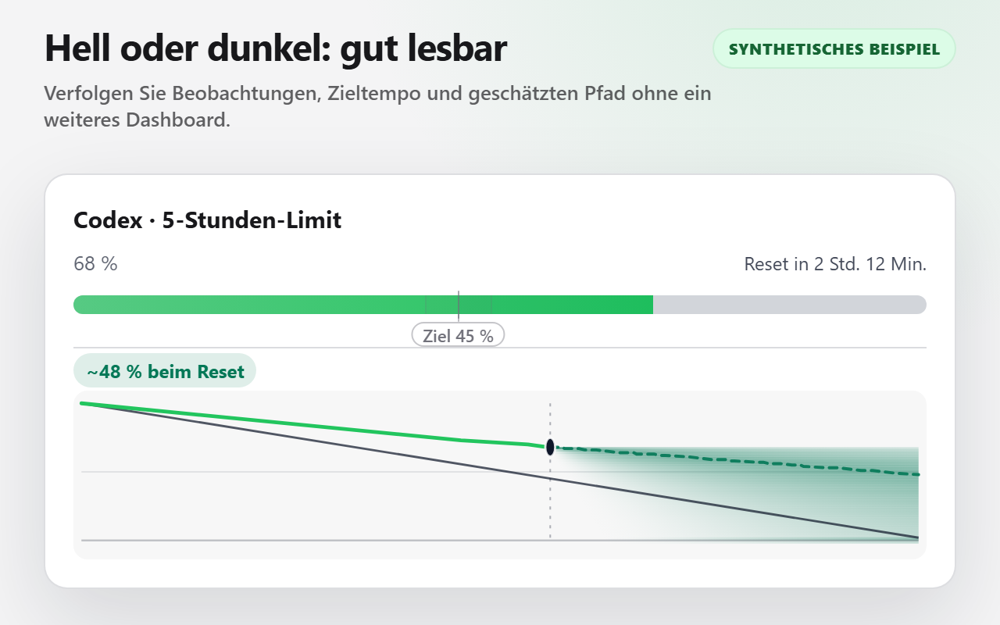
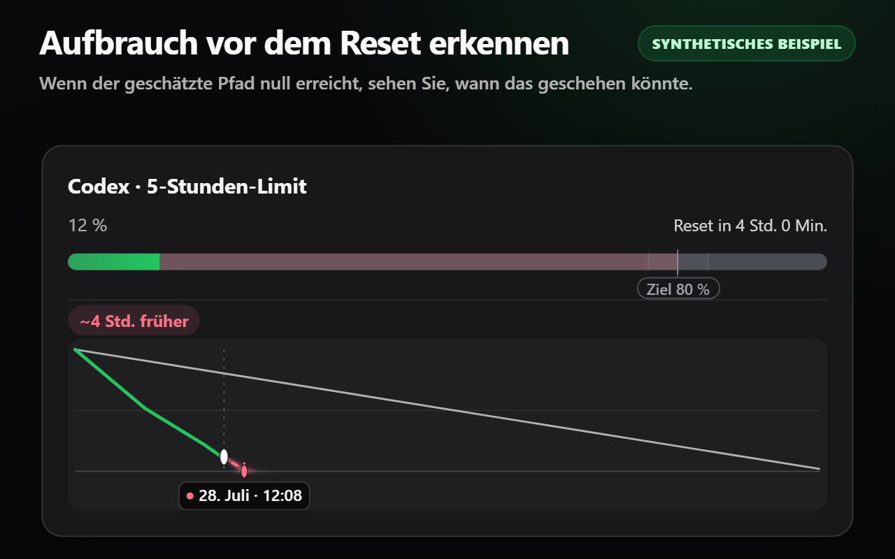
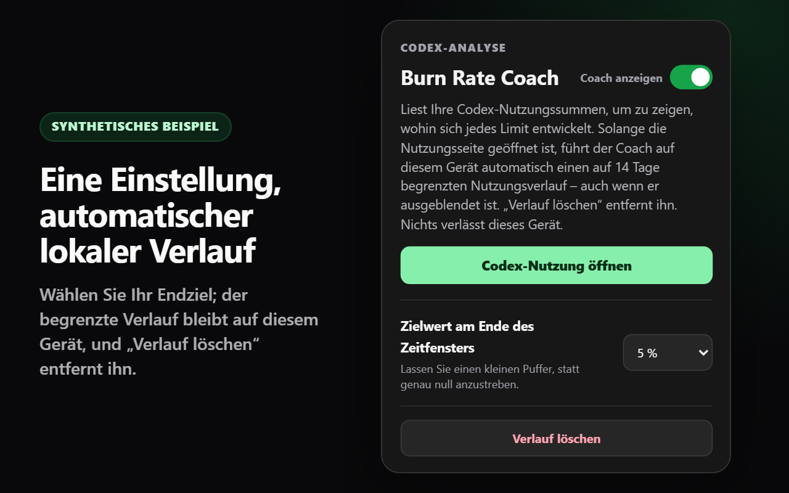

Das Ergebnis zuerst
Jedes Kontingent zeigt unabhängig sein geschätztes Restkontingent beim Reset oder den Zeitpunkt, zu dem es null erreichen könnte. Keine Karte setzt eine andere außer Kraft.
Burn Rate Coach ergänzt jede unterstützte Codex-Nutzungskarte um ein prognostiziertes Ergebnis und einen kompakten lokalen Verlauf.

Sehen Sie das prognostizierte Restkontingent beim Reset oder den geschätzten Zeitpunkt des vorzeitigen Aufbrauchens, ohne ein weiteres Dashboard zu öffnen.
Jedes Kontingent zeigt unabhängig sein geschätztes Restkontingent beim Reset oder den Zeitpunkt, zu dem es null erreichen könnte. Keine Karte setzt eine andere außer Kraft.
Die beobachtete Nutzung bestimmt die Prognose. Ihr Ziel ist eine zurückhaltende Referenz, die den Verlauf lediglich gegenüber einem festen Korridor einfärbt.
Wählen Sie einen Zielwert am Ende des Zeitfensters. Der begrenzte 14-Tage-Verlauf wird automatisch geführt, bleibt auf diesem Gerät und kann im Pop-up gelöscht werden.
Für diese Bilder wird der Produktionscode der Erweiterung mit einer privaten, strukturell originalgetreuen Testumgebung ausgeführt. Kontodaten sind nicht enthalten.




Solange Codex Analytics geöffnet ist, beobachtet Burn Rate Coach passiv das von der Seite selbst erfolgreich decodierte Kontingentergebnis, sobald die Seite es liest. Die Erweiterung greift nur auf die für die Prognose erforderlichen stabilen Kennungen von Kontingent und Zeitfenster, den verbrauchten Prozentsatz, die Dauer des Zeitfensters und den Reset-Zeitpunkt zu. Sie erzeugt den Beobachtungszeitpunkt lokal und ordnet Ergebnisse den ursprünglichen Karten ausschließlich anhand übereinstimmender numerischer Fortschritts- und Reset-Metadaten zu – niemals anhand übersetzter Beschriftungen oder der Kartenreihenfolge. Einstellungen und automatische begrenzte Momentaufnahmen verbleiben in chrome.storage.local.
Burn Rate Coach startet keine zusätzliche Netzwerkanfrage, klont oder decodiert die Antwort nicht eigenständig, untersucht weder Cookies noch Autorisierungsheader, überträgt keine Kontingentdaten und greift nicht auf Konto-, E-Mail-, Tarif-, Guthaben- oder Ausgabenkontrollfelder zu. Die einzige Berechtigung der Erweiterung ist storage. Zwei enthaltene Deklarationen für Inhaltsskripte verwenden für den direkten Einstieg und den SPA-Einstieg gemeinsam ein einziges begrenztes Übereinstimmungsmuster, https://chatgpt.com/codex/*; die Laufzeitverarbeitung und Darstellung von Daten bleibt auf Analytics beschränkt. Es gibt keinen Hintergrundkontext, kein Backend, keine Telemetrie, keine Werbung, keinen externen Code und kein Kontosystem von Burn Rate Coach.
Burn Rate Coach ist kostenlos im Chrome Web Store erhältlich.